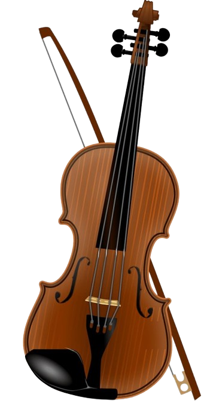

The violin, an instrument of unparalleled grace and versatility, embodies centuries of musical tradition and innovation.
Crafted from carefully selected woods, its elegant curves and delicate features hint at the exquisite melodies it holds
within. From the moment the bow meets its strings, the violin unleashes a cascade of emotions, from the tenderest
whispers to the most triumphant fanfares.
With its four strings stretched taut across a resonant body, the violin possesses a voice that can soar to celestial
heights or delve into the depths of human emotion. Its rich timbre resonates with warmth and intimacy, capable of
expressing the full spectrum of human experience. Whether played solo or as part of an ensemble, the violin weaves
intricate tapestries of sound, captivating listeners with its virtuosity and emotive power.
In the hands of a skilled musician, the violin becomes an extension of the soul, channeling raw emotion into melodic
expression. Its versatility knows no bounds, seamlessly transitioning between genres and styles, from classical
masterpieces to folk melodies, from jazz improvisations to contemporary compositions. Each stroke of the bow, each press
of a finger on the fingerboard, yields a kaleidoscope of timbres and textures, painting vivid musical landscapes that
resonate with audiences around the world.
Beyond its musical prowess, the violin is steeped in cultural significance, its timeless allure transcending borders and
generations. It has inspired countless composers, virtuosos, and artists, leaving an indelible mark on the fabric of
human creativity. As both a symbol of refinement and a vessel for raw expression, the violin stands as a testament to
the enduring power of music to unite, inspire, and uplift the human spirit.
|  | |
| String instrument | |
|---|---|
| Other names | Fiddle |
| Hornbostel-Sachs classification | 321.322-71 (Composite chordophone sounded by a bow) |
| Developed | Early 16th century |
| Related instruments | Violin family |
| Playing range | |
Instruments like the violin that use a bow to produce a sound are called bowed stringed instruments. The Arabian rabab
and the rebec, which came from the orient in the middle ages and was played widely in Spain and France in the fifteenth
century, are said to be the ancestors of the violin. Near the end of the middle ages, a bowed stringed instrument called
a fiddle appeared in Europe. In the East, the Chinese erhu and morin khur evolved from the rabab, and so they are relatives
of the violin.
Compared to its ancestors, the violin is in a class by itself in terms of completeness. In addition, it was not improved
gradually over time, but appeared in its current form suddenly around 1550. Yet, none of these early violins exist
today. This history of the violin is inferred from paintings from this era that feature violins.
The two earliest violin makers in recorded history are both from northern Italy: Andre Amati from Cremona and Gasparo di
Bertolotti from Salon (Gasparo di Salon). With these two violin makers, the history of the violin emerges from the fog
of legend to hard fact. Violins produced by these two still exist today. In fact, the oldest violin in existence today
is one built by Andre Amati around 1565.
Vibrations from the strings are transmitted to the top plate and bottom plate through the bridge, and this reverberates
within the hollow body, producing the rich, brilliant tone characteristic of the violin.
A bowed string vibrates and moves in a circular motion that produces the fundamental tone, while the vibration produces
overtones like a rippling wave. This complex movement of the string is transmitted to the body by the bridge. The bridge
transmits this vibration to the top plate of the violin through two fundamental movements; one in which it pushes down
on the top plate alternately one foot at a time, and the other in which both feet push down on the top plate
simultaneously.
There is another small yet important part: the sound post. The sound post is a post sandwiched between the top plate and
the bottom plate underneath the bridge, and it transmits the vibrations from the top plate to the bottom plate. It also
serves to preserve the shape of the body.
If you look inside a violin, you can see the bass bar running up the left hand side as you face the instrument. The
piece sitting under the bridge on the right-hand side is the sound post.
The violin is a beautiful and complex instrument. In order to truly understand how to play the violin, it is important
to first understand the different parts of the violin and how they work together. Let's take a look at the anatomy of
the violin.
~ The Neck and Fingerboard
The neck of the violin is attached to the body of the instrument and is angled so that the player can hold the violin
comfortably while playing. The fingerboard is attached to the neck and is usually made of ebony. The player presses
their fingers down on the fingerboard to create different notes.
~ The Bridge
The bridge is a thin piece of maple that sits on top of the soundboard. The strings cross the bridge, which helps
transfer their vibrations to the soundboard.
~ The Soundboard
The soundboard is also known as the “top” or belly. It is a large, flat piece of spruce that amplifies the sound of the
strings.
~ The F-Holes
There are two small f-shaped holes in the top of the violin, known as “F-holes.” These holes help project sound out from
the instrument.
~ The Tailpiece and Endpin
The tailpiece is located at the end of the instrument and holds all four strings in place. The tailpiece is attached to
the endpin and helps anchor the tension of the strings.
~ Pegs and Strings
There are four pegs located at the top of the neck or pegbox near where it meets the body of the instrument. Each string
is wrapped around a peg, which can be turned to tighten or loosen the string. This changes how high or low each note
sounds when played.
As you can see, there are many different parts that make up a violin. Each part serves an important purpose in creating
beautiful music. By understanding how each part works, you will be able to play your violin with greater skill and
confidence.
The standard modern violin family consists of the violin, viola, cello, and (possibly) double bass. Instrument names in the violin family are all derived from the root viola, which is a derivative of the Medieval Latin word vitula (meaning "stringed instrument").
Charmie Weerapperuma 2024 | © All Rights Reserved